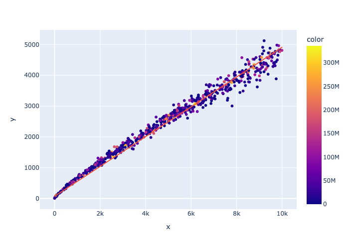

Jitter
Results from Cyclic Motion and the Arrow of Time.
Take $$J_s = \sum_k{\mathbin{sgn}(J_{k+1}-J_k)}$$ as a measure of "jitter", which for positive could mean time is moving forward.
Simulation
See in ../circle, circle.py
Analysis
Analysis is a bit too strong a word. But it looks like at sensitivity approximately equal to 1/2 average density is where jitter is strongest.
